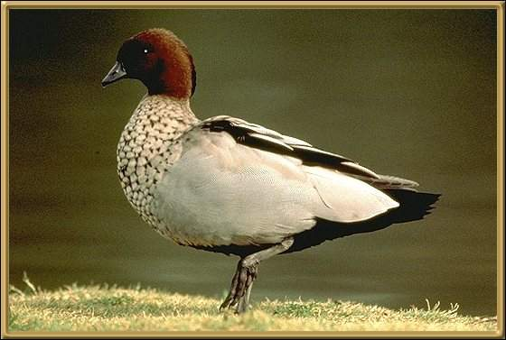

Found throughout most of Australia, these waterbirds are sometimes called geese. They raise their families beside many suburban swimming pools and flocks congregate in parks and by creeks once the young are grown. 46-51cm (18-20 inches).
Photographer: B Chudleigh